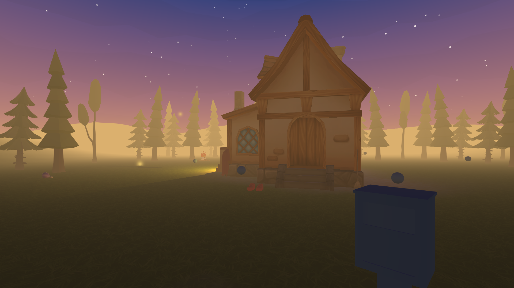
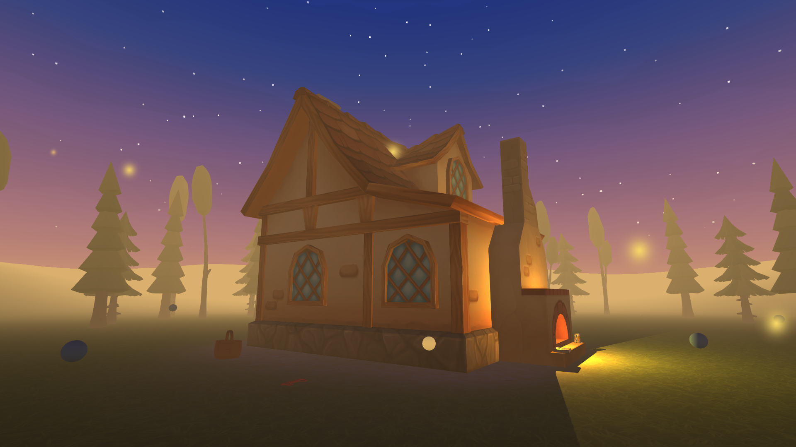
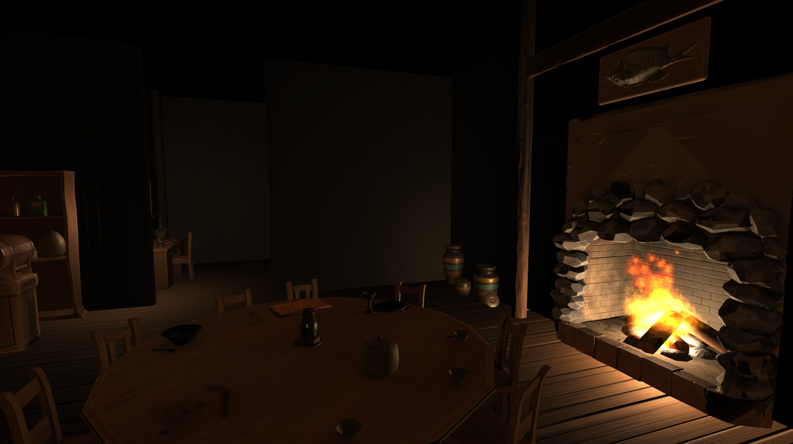

Thème libre
C'est un projet de groupe réalisé dans le cadre du cours de réalité virtuelle. Le choix du thème était libre. Kodama est un jeu d'aventure en réalité virtuelle. Le joueur y contrôle Kodama, un esprit espiègle de la forêt dans laquelle se déroule l'histoire.
À travers ce jeu, le joueur va se téléporter et interagir avec des objets qui l'entourent afin de retracer l'histoire du chaperon rouge, une fille à la sensibilité exacerbée.


